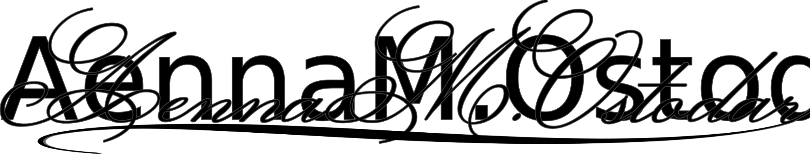

Davian,
I'm glad to hear you escaped Falsk without incident. You gave Freir quite the story to write. I hope you're okay with a few embellishments, he's a reporter, after all, and he sometimes can't help himself. You've probably already found the article that came with this letter. Congratulations, you're famous for the next week or so. Other people would kill for that kind of publicity. In a way, you've done just that.
Sadly, I have also recovered. I'm sure you were happy to see me die, but I'm not kind enough to give you the satisfaction. Freir has been a perfect gentleman since my coming home—he's far better than you ever were.
Alas, this letter is not simply for pleasantries. I hope you never thought you were special enough to me to merit a personal letter. I'd have completely forgotten you already except that you have information I want. I don't care enough to not write you out of spite, so here we are.
I lead you on a number of wild goose chases to find your precious gold orb. One of the people you talked to was a man named Selos Reykspor. I believe it was the second day you were here, but, seeing as I didn't sleep the four days you were in Falsk, I don't remember exactly. I was caught up in a number of other things at the time, and forgot to ask what he said to you.
I'm eager to see Selos rot in prison for some personal injustices he's committed against me. A hanging would be too quick a death. Starvation is more fitting. I'll have him beg for his life, then his death, and I'll give him neither.
Enclosed you'll find fifty gold pieces. That's a promise. If you give me information about Selos, I'll give you another hundred. If you give me something I can use to destroy him, I may slip and add an extra zero.
Enjoy brutishly killing things,
